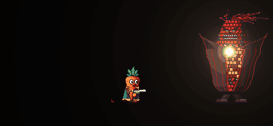

Red Corn
The middle-room boss of the Burrow Encounter, a towering red-and-black ear of corn that sprays scissoring kernel streams, lobs popcorn mortars that leave burning patches, and slams its husk into the ground.
Behaviour
Red Corn is Big Cobber's big, angry cousin: a towering heirloom ear of blood-red and glossy black kernels in a charred, red-veined husk jacket, with a wild dark-red mane of silk and a jagged grin. It stands roughly a third taller than Big Cobber.
It moves the same way, only heavier. It lumbers toward the nearest player one step at a time, peaking at 36 px/s mid-step, swaying, and sometimes stumbling into a teeter that lasts 0.9 s. It stops about 70 px from its target, hops up ledges no taller than 26 px and never climbs onto planks. If a player stands on a plank right above it, it backs off for 1.2 s to get an angle. It keeps its wide body clear of walls and shut doors. Bullets barely shove it (4 px/s per hit).
Between steps it picks an attack. Its first comes 1.4 s to 2.2 s after it appears, then one every 1.5 s to 2.5 s:
- If someone is close, it husk slams (this has its own cooldown, 3.5 s).
- Otherwise, with a clear line from its chest to its target within 520 px, it usually sprays kernels: either twin streams or a fan. Sometimes it lobs mortars instead.
- Without a clear line, it lobs mortars at a target within 900 px, over planks and all.
Attacks
The husk telegraph
Before a spray it pulls its husk open and the chest kernels glow hotter and hotter while it tracks its target. The husk takes 0.45 s to peel open and stays open for 1.1 s before it fires; for the last 0.35 s the aim stops following you. It can aim up to 1.15 rad above straight ahead and 0.7 rad below. After any attack it takes 0.7 s to close up before it walks on.
Twin streams
Two streams of kernels (per stream: 13x, one every 0.09 s) spray from its chest, starting 10 px apart. They sweep across 1 rad in opposite directions, crossing at the aim like scissors. The aim drifts after you slowly (0.3 rad/s).
Both streams skip the same safe lane, 0.2 rad wide, somewhere in the sweep. Stand in it and both streams pass you by.
Fan
Waves of kernels (waves: 3x; kernels per wave: 6x; 0.38 s apart), each spread across 1.2 rad. Every other wave is shifted half a gap, so the holes move: step between the kernels of one wave, then shift for the next.
Stream and fan kernels fly at 240 px/s for up to 3 s, each dealing 8 hp (players have 130 pts shield and 70 hp health) and knocking the carrot along the shot and upward. A kernel to the head does 2x times the damage.
Popcorn mortars

| Phase | Lasts | What you see |
|---|---|---|
| Wind-up | 0.8 s | The chest glows and it rears back. |
| Lobs | One every 0.25 s | Red-hot kernels (per volley: 3x) arc high, each in flight for about 1.15 s. A reticle marks where each will land. The first lands on its target; the rest scatter up to 110 px either side of any player. |
| Fuse | 1 s | A landed kernel sits glowing inside a shrinking warning circle. |
| Pop | Instant | It explodes: 20 hp to anyone within 30 px, with a knockback. |
A lob that lands right on a player deals 12 hp and then drops there to start its fuse. A kernel that landed on the ground leaves a burning popcorn patch up to 46 px wide for 3.5 s. Standing in a patch deals 6 hp every 0.45 s and kicks you upward; patches don't stack.
Husk slam
When a player is within 80 px either side of it and no more than 50 px above or below its feet, it raises two huge husk leaves overhead for 0.75 s while a dashed line on the floor marks the shockwave's reach. Then it slams them down and stays stuck in the ground for 0.7 s.
- Within 34 px of the impact, everyone is hit, jumping or not.
- A shockwave rolls along the ground 170 px each way at 360 px/s (stopping at walls and ledge ends). A carrot whose feet are 8 px or more off the ground clears it, so jump it.
Both deal 25 hp and knock the carrot away and upward.
Enrage
When its health drops below the enrage threshold (enrage_at in the stats), it roars for
1.6 s and tears its husk off for good, flinging shredded leaves away. From then on the
bare kernels smoulder, the chest weak spot is always exposed, and every attack is faster and
denser:
| What | Multiplier or change |
|---|---|
| Time between attacks and slams | 0.6x |
| Telegraphs (opening, wind-ups) | 0.7x |
| Walking pace | 1.25x |
| Kernels per stream or fan wave | 1.45x |
| Time between kernels and waves | 0.8x |
| Extra mortars per volley | 2x |
| Extra fan waves | one |
With no leaves left, the enraged slam is a crouch, a hop and a stomp, with the same hit and shockwave.
Headshots
While the husk is closed, the weak spot is its face and mane at the top of the cob. While the husk is open, and permanently once it is torn off, the weak spot is the glowing chest kernels in the middle of its body.
Strategy
- Shoot the chest whenever the husk is open: the telegraph is the damage window. After the enrage the chest is always open.
- Twin streams: find the safe lane and stand in it. Moving across the scissors is harder than standing still in the gap.
- Fan: step into a gap, then shift half a gap as the next wave comes.
- Mortars: keep moving off the reticles and away from the warning circles, and don't fight standing in a burning patch.
- Close up it will slam. Back out of the inner circle and jump the wave, or stay at range.
- Dashing through kernels, a pop or a slam dodges it: dash i-frames beat every attack in the game. Patches don't hurt during a dash either.
- Planks block the sprays but not the mortars.
Co-op
The host runs Red Corn's AI and physics and streams its state (husk opening, aim, gait, stumble, enraged, sweep, fan) to everyone else. Kernels, mortars, the slam and the enrage are events every machine plays out. Each machine checks only its own carrot against the kernels, mortar pops, burning patches and shockwaves, so a hit always matches what that player saw. Kernels, mines and patches already out keep going even after it dies.
Mortars after the first scatter around any player, not just its target, so spread-out squads all have to watch the sky.
Death
It goes up in a giant eruption: a blinding pop, a fountain of red-and-black popcorn popping for over a second, charred husk flakes fluttering down, mane strands, embers, smoke and a huge thump.
Appearances
- Burrow Encounter: the boss of the middle room, lit by red torches. When a player gets far enough in, the doors shut and Red Corn arrives with adds that keep coming back while the fight is on: two Spear-Gus up on the ledges, a Zombie and a Shroom on the floor.
- Killing it opens the doors, takes the adds down and drops the room's red key orb (its buff is called KERNEL FURY). Carry it back to the red pedestal in the hub. Each orb placed there breaks part of The Ginger's shield and unlocks more of its health.
- The Ginger Shade may haunt its room during the fight, sniping at the players there.
Design notes
Red Corn takes Big Cobber's open-husk telegraph and builds a bullet-pattern fight around it: each attack has a readable answer (the lane, the moving gaps, the reticles, the jump), and the mortars punish standing still while the slam punishes hugging it. The enrage removes the telegraph's cover for good, trading a permanent weak spot for denser fire.
Tunable parameters
These are read straight from the game's files, so they are always the current values. Open the file in the Godot Inspector to change them.
Stats
Edit styles/enemies/red_corn.tres · fields defined in scripts/enemy_stats/red_corn_stats.gd
| Parameter | Value | Range | What it does |
|---|---|---|---|
| Health | |||
hp | 1600 hp | 1 to 20000 | Hit points. A revolver body shot does 10, a headshot 20. |
flash_gap | 0.25 s | 0 to 1 | Least time between hit flashes (at most ~4 a second; a sprite this big strobes otherwise). |
flash_time | 0.05 s | 0 to 0.3 | How long a hit flash lasts. |
flash_bright | 1.25x | 1 to 3 | How bright a hit flash is (1 = no flash). |
hit_push | 4 px/s | 0 to 50 | How hard a bullet shoves it sideways. |
| Movement | |||
gait | 0.85x | 0.1 to 4 | Steps per second. |
lift | 0.55 | 0.05 to 0.95 | The share of each step spent moving; the rest is the planted pause. |
walk_peak | 36 px/s | 0 to 150 | Top speed mid-step (it averages roughly a third of this). A carrot runs 115. |
stumble_chance | 0.12 | 0 to 1 | Chance per step that it stumbles. |
stumble_rate | 1.4x | 0.5 to 4 | A stumbling step goes this much quicker... |
stumble_speed | 2x | 0.5 to 5 | ...and this much faster (so further). |
teeter | 0.9 s | 0 to 3 | How long it teeters after a stumble before catching itself. |
keep | 70 px | 0 to 400 | Stops this far from its target. |
back_off | 1.2 s | 0 to 5 | With a player on a plank right overhead, it backs off this long for an angle. |
hop_max | 26 px | 0 to 80 | The highest ledge it will hop up. |
hop_x | 60 px/s | 0 to 200 | Sideways speed of a hop. |
stuck_time | 2.5 s | 0.1 to 8 | Walking this long without getting anywhere makes it hop. |
wall_margin | 2 px | 0 to 20 | Extra gap it keeps between its drawn sides and any wall or shut door. |
| Attacks | |||
cooldown_min | 1.5 s | 0 to 10 | Time between attacks (random in range). |
cooldown_max | 2.5 s | 0 to 10 | |
first_min | 1.4 s | 0 to 8 | Time before its first attack after spawning (random in range). |
first_max | 2.2 s | 0 to 8 | |
attack_range | 520 px | 0 to 1500 | It sprays kernels at a player within this distance (with a clear line from its chest). |
mortar_range | 900 px | 0 to 1500 | It lobs mortars at a player within this distance (no clear line needed). |
mortar_chance | 0.35 | 0 to 1 | With a clear shot, the chance it lobs mortars anyway instead of spraying. |
fan_chance | 0.35 | 0 to 1 | Of its sprays, the share that are fans instead of twin streams. |
| Husk telegraph | |||
open_time | 1.1 s | 0.05 to 4 | The telegraph: the husk is open and glowing this long before it sprays. |
open_peel | 0.45 s | 0.05 to 2 | How long the husk takes to peel open. |
lock | 0.35 s | 0 to 2 | For the last lock seconds of the telegraph the aim stops following the player. |
turn | 2.2 rad/s | 0 to 10 | How fast the aim turns toward the player during the telegraph. |
aim_up | 1.15 rad | 0 to 1.57 | How far the aim may point up / down from straight ahead. |
aim_down | 0.7 rad | 0 to 1.57 | |
close_time | 0.7 s | 0.05 to 3 | Closing up again after an attack before it walks on. |
| Twin streams | |||
stream_count | 13x | 1 to 60 | Kernels in each of the two streams. |
stream_gap | 0.09 s | 0.01 to 1 | Time between kernels in a stream. |
stream_sweep | 1 rad | 0 to 3 | Each stream sweeps across this angle through the aim; the two cross like scissors. |
stream_lane | 0.2 rad | 0 to 1 | Both streams skip a lane this wide (somewhere in the sweep): stand in it to dodge. |
stream_split | 10 px | 0 to 40 | The two streams start this far apart up and down the chest. |
turn_fire | 0.3 rad/s | 0 to 4 | How fast the aim follows the player while spraying. |
jitter | 0.03 rad | 0 to 0.5 | Random wobble on each kernel's angle. |
pellet_speed | 240 px/s | 20 to 800 | Kernel speed. |
pellet_life | 3 s | 0.2 to 8 | How long a kernel flies before it vanishes. |
| Fan | |||
fan_waves | 3x | 1 to 12 | Waves in a fan attack. |
fan_count | 6x | 1 to 20 | Kernels in each wave. |
fan_spread | 1.2 rad | 0 to 3 | Each wave spreads across this angle; every other wave is shifted half a gap. |
fan_wave_gap | 0.38 s | 0.05 to 2 | Time between waves. |
| Popcorn mortars | |||
lob_windup | 0.8 s | 0.05 to 3 | Windup before the first lob (the chest glows, it rears back). |
mortar_count | 3x | 1 to 16 | Mortars per volley. |
mortar_gap | 0.25 s | 0.02 to 2 | Time between lobs. |
mortar_flight | 1.15 s | 0.3 to 3 | Flight time of a lob (higher means a taller arc). |
mortar_gravity | 520 px/s² | 50 to 2000 | Gravity on a lobbed kernel. |
mortar_spread | 110 px | 0 to 400 | The first lands on its target; the rest scatter up to this far either side. |
mortar_hit_damage | 12 hp | 0 to 100 | A lob that lands on a player directly does this much. |
mortar_fuse | 1 s | 0.1 to 4 | How long a landed kernel sits glowing (its warning circle shrinking) before it pops. |
blast_radius | 30 px | 4 to 150 | Radius of the pop. |
blast_damage | 20 hp | 0 to 100 | Damage of the pop to a player inside the circle. |
blast_knock | 220 px/s | 0 to 600 | Knockback of the pop. |
patch_width | 46 px | 4 to 200 | Width of the burning popcorn patch the pop leaves. |
patch_time | 3.5 s | 0 to 15 | How long the patch burns. |
patch_damage | 6 hp | 0 to 100 | Damage per tick to a player standing in the patch. |
patch_tick | 0.45 s | 0.05 to 3 | Least time between patch ticks on one player (patches don't stack). |
patch_knock | 120 px/s | 0 to 400 | The patch's hop-out kick (upwards). |
| Husk slam | |||
slam_range | 80 px | 0 to 300 | It slams when a player is within this distance either side... |
slam_height | 50 px | 0 to 200 | ...and no more than this far above or below its feet. |
slam_cooldown | 3.5 s | 0 to 15 | Least time between slams. |
slam_windup | 0.75 s | 0.05 to 3 | The telegraph: husk leaves raised (enraged: crouched) this long before they come down. |
slam_recover | 0.7 s | 0.05 to 3 | Stuck in the ground after the slam before it walks on. |
slam_inner | 34 px | 0 to 150 | Close to the impact, anyone is hit (jumping or not). |
wave_reach | 170 px | 0 to 600 | The shockwave rolls along the ground this far each side (jump it). |
wave_speed | 360 px/s | 20 to 1500 | Shockwave speed. |
wave_clear | 8 px | 0 to 60 | A player whose feet are this far above the ground clears the wave. |
slam_damage | 25 hp | 0 to 100 | Damage of the slam and of its shockwave. |
slam_knock_x | 300 px/s | 0 to 800 | Slam knockback (away, and up). |
slam_knock_y | 230 px/s | 0 to 800 | |
| Enrage | |||
enrage_at | 0.5 | 0 to 1 | Below this share of its health, the husk tears off for good. |
roar_time | 1.6 s | 0 to 5 | How long the tear-off roar lasts (it does nothing else meanwhile). |
rage_cooldown | 0.6x | 0.1 to 2 | Enraged: cooldowns are this many times as long. |
rage_telegraph | 0.7x | 0.1 to 2 | Enraged: telegraphs (opening, windups) are this many times as long. |
rage_gait | 1.25x | 0.5 to 3 | Enraged: steps per second this many times as fast. |
rage_density | 1.45x | 0.5 to 4 | Enraged: kernels per stream / fan this many times as many. |
rage_gap | 0.8x | 0.1 to 2 | Enraged: kernels this many times as close together in time. |
rage_mortars | 2x | 0 to 10 | Enraged: this many more mortars per volley, and one more fan wave. |
| Damage | |||
pellet_damage | 8 hp | 0 to 100 | Damage per stream or fan kernel that hits a player. |
pellet_knock_x | 130 px/s | 0 to 500 | Kernel knockback (along the shot, upwards). |
pellet_knock_y | 100 px/s | 0 to 500 | |
| Feel | |||
step_shake | 0.22x | 0 to 1 | Screen shake of a footfall (nearby; a stumble's is about double). |
slam_shake | 0.8x | 0 to 1 | Screen shake of the slam. |
pop_shake | 0.3x | 0 to 1 | Screen shake of a mortar popping. |
roar_shake | 0.9x | 0 to 1 | Screen shake of the enrage roar. |
death_shake | 1x | 0 to 1 | Screen shake of the death. |
glow_base | 0.9x | 0 to 4 | Brightness (HDR intensity) of the open chest's glow when cool... |
glow_heat | 0.8x | 0 to 4 | ...plus this much at full heat. Too much and the kernels wash out into a blob. |
glow_alpha | 0.35 | 0 to 1 | Opacity of the chest's glow overlay when cool, plus this much at full heat. |
glow_alpha_heat | 0.5 | 0 to 1 | |
rage_heat | 0.5 | 0 to 1 | Enraged, the bare kernels always smoulder at least this hot (0..1). |
death_popcorn | 120x | 0 to 300 | Popcorn pieces in the death eruption. |
mine_gravity | 600 px/s² | 0 to 2000 | How hard a landed mortar kernel falls if it's knocked into the air (or lands on a ledge edge). |
popcorn_gravity | 380 px/s² | 0 to 2000 | Gravity on popped popcorn and debris as it bounces and settles. |
popcorn_life | 3 s | 0.2 to 15 | How long popped popcorn lies around before it blinks out. |
Movement feel
Edit styles/red_corn_tuning.tres · fields defined in scripts/tuning.gd
| Parameter | Value | Range | What it does |
|---|---|---|---|
| Movement | |||
run_speed | 115 px/s | 0 to 400 or more | Players only: top running speed (enemies take their walk speed from their stats). |
accel | 600 px/s² script default 1300 px/s² | 0 to 3000 or more | How quickly it speeds up to full speed on the ground. |
decel | 1500 px/s² script default 1700 px/s² | 0 to 3000 or more | How quickly it slows to a stop on the ground once it lets go (lower = more slide). |
air_accel | 260 px/s² script default 800 px/s² | 0 to 3000 or more | How quickly it can change speed in mid-air (lower = less air control). |
gravity | 1250 px/s² script default 1050 px/s² | 0 to 3000 or more | Downward pull while rising (falling multiplies this by fall_mult). |
fall_mult | 1.45x | 0.5 to 4 or more | Gravity is this many times stronger while falling, so falls are snappier than rises. |
max_fall | 440 px/s | 0 to 1500 or more | Fastest it can fall. |
jump_speed | 300 px/s script default 390 px/s | 0 to 1000 or more | Launch speed of a jump (the carrot's default reaches about 72px high). |
jump_cut | 0.45x | 0 to 1 | Letting go of jump early multiplies the upward speed by this, for short hops (1 = no cut). |
coyote | 0.09 s | 0 to 0.5 or more | Grace period to still jump after walking off a ledge. |
jump_buffer | 0.12 s | 0 to 0.5 or more | A jump pressed this long before landing still counts. |
| Double jump and dash | |||
air_jumps | 0 | 0 to 5 or more | Extra jumps in mid-air before landing (0 = no double jump; enemies use 0). |
air_jump_speed | 340 px/s | 0 to 1200 or more | Launch speed of a mid-air jump (a touch weaker than the ground jump: about 55px). |
dash_speed | 360 px/s | 0 to 1200 or more | Speed during a dash. |
dash_time | 0.15 s | 0 to 1 or more | How long a dash lasts; distance is dash_speed * dash_time (about 54px). |
dash_cooldown | 0.45 s | 0 to 3 or more | Wait from the start of one dash until the next one is allowed. |
air_dashes | 1 | 0 to 5 or more | Dashes allowed per trip through the air (ground dashes are only limited by the cooldown). |
dash_iframes | 0.2 s | 0 to 1 or more | Invincible for this long from the start of a dash: the whole dash plus a little grace, so a dash *through* a shot never gets you hit on the way out. Bullets pass through you meanwhile. |
| Shield and health | |||
max_shield | 130 pts | 0 to 1000 or more | Players only: the full shield. A carrot's life is a shield on top of its health. Hits drain the shield first; health only goes down once the shield is at 0, and the carrot is knocked out when health reaches 0. Both recharge on their own a while after the last hit (any hit restarts both waits). |
max_health | 70 hp | 1 to 1000 or more | The full health. (Enemies' own health is in their stats.) |
shield_overflow | Yes | A hit bigger than what's left of the shield: on, the rest spills into health; off, the shield soaks up the whole breaking hit and health is only hurt from the next one. | |
shield_regen_delay | 4.5 s | 0 to 30 or more | Time after the last hit before the shield starts to recharge... |
shield_regen_rate | 36 pts/s | 0 to 400 or more | ...and how fast it then refills. |
health_regen_delay | 2.5 s | 0 to 30 or more | Time after the last hit before health starts to recharge (it can refill while the shield is still down)... |
health_regen_rate | 18 hp/s | 0 to 200 or more | ...and how fast it then refills. |
| Getting hit | |||
headshot_mult | 2x | 1 to 5 or more | Players only: enemy shots that land on a player's head do this many times the damage. (Guns, their damage and falloff live in Weapon resources: styles/weapons/.) |
hurt_grace | 1 s | 0 to 5 or more | Players only: after a hit the carrot flashes white, then blinks and can't be hurt again for this long. |